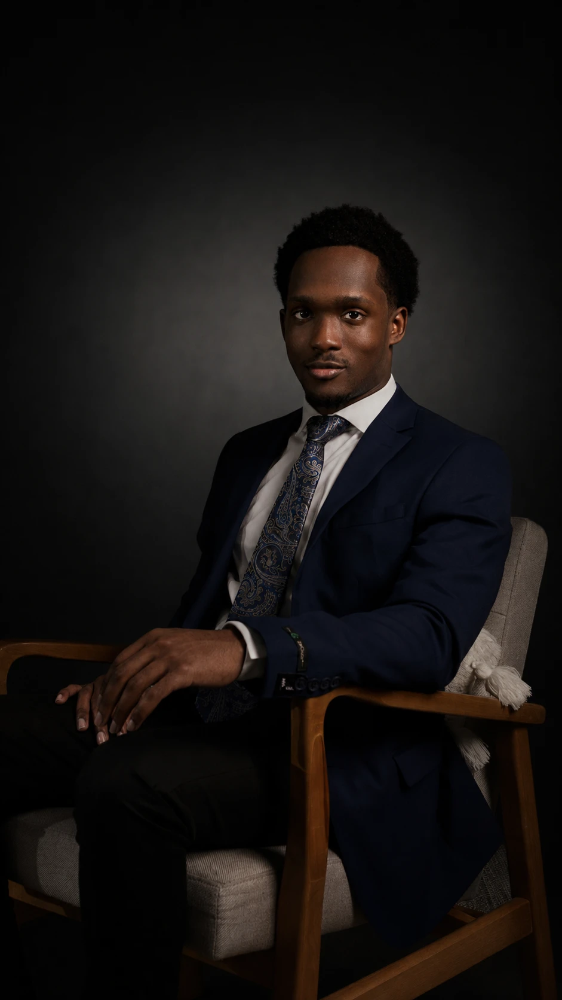
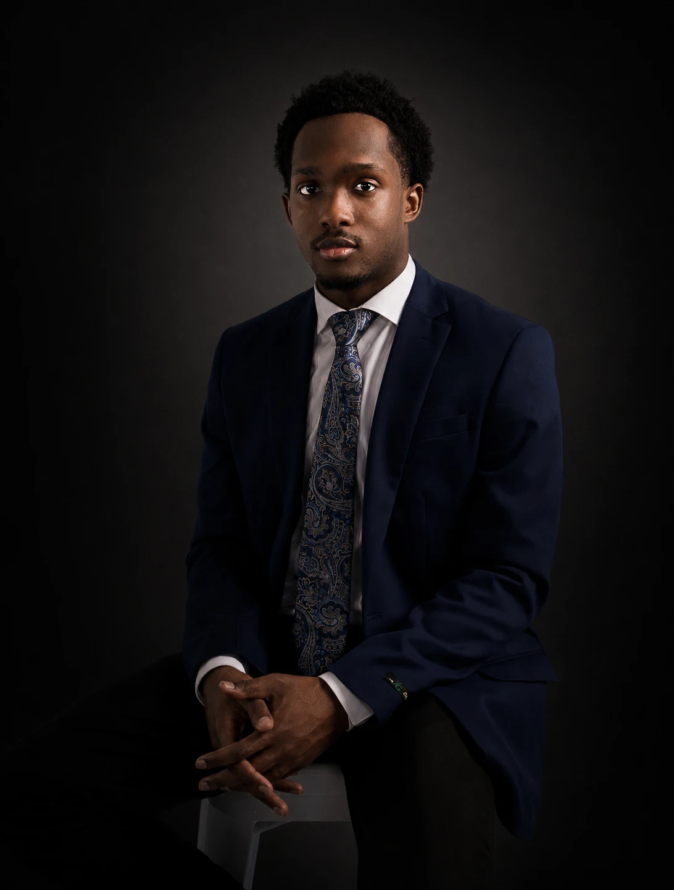
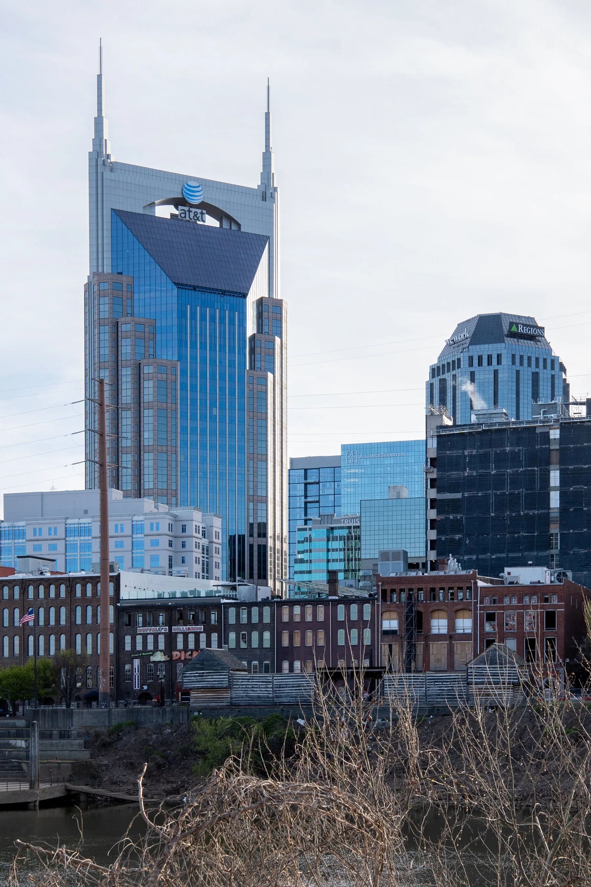

Email & Digital Marketing
Campaign structure, responsive email execution, audience lists, and post-campaign analysis.

I combine organised execution with audience-focused thinking to help campaigns feel intentional from the first idea through delivery.
I’m a marketing and events professional building toward the creative and content side of marketing, with experience across campaigns, audience engagement, email, social content, research, and marketing operations.
I’m strongest where strategy and creativity meet: finding the audience insight, shaping the message, developing the content, and helping teams carry a consistent story across digital and in-person touchpoints.
My work sits where creative thinking meets marketing strategy: campaign concepts, content, audience engagement, and experiences that give people a reason to care. I’m especially interested in growing deeper into creative and content-led marketing.
Tools listed are the ones evidenced in the case studies and builds on this site.
Strategy and creative, then the follow-through that makes the work land.
Campaign structure, responsive email execution, audience lists, and post-campaign analysis.
Pre-event promotion, partner communications, on-site content, and attendee engagement.
Campaign concepts, social copy, visual direction, storytelling, and content coordination.
Contact organisation, outreach workflows, research, reporting, and follow-up support.

Shooting events taught me the same thing campaigns did: the interesting frame is almost never the obvious one. A lot of the content on this site — carnival crowds, vendor portraits, city work — is mine.
